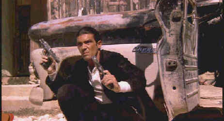

Columbia/1995/103/ANA 1.85
 |
Banderas kicks butt.©Columbia |
Much of Desperado
does no more than retrace elements of that fresh and frenzied first film. It is a hybrid
of remake and sequel, unfortunately lacking the innocence of the director’s first
effort. This time out the Mariachi is more technically well heeled, mimicking
Rodriguez’s additional production bucks. More squibs, more bullets, more machines,
less genuine ingenuity.
Director Rodriguez is also gifted with the dynamic screen
presence of Antonio Banderas. Banderas acquits himself very well under the director’s
guidance, filling up the movie stars shoes much more convincingly than he did in his Assassins
role opposite Stallone. More the shame that Banderas hasn’t got much more to do
than leap through air while firing off a ridiculous variety of weaponry. The rest of the
casting is questionable at best. The usually reliable Steve Buscemi who seems to be
everywhere these days fares poorly under the Rodriguez flag and Quentin Tarantino seems so
out of place it is pathetic.
The quick cuts and imaginative dissolves do instill fire in the
montage process. But the mammoth holes in the story cannot be covered up the dexterous
editing of Rodriguez. The photography by Guillermo Navarro is inventive and polished and
the music by Los Lobos is highly enjoyable. The title sequence with Banderas blasting
guitar chords instead of guns is a joy. It is down hill from there. Desperado could
almost define gratuitous violence. It even lacks the ability to laugh at itself.
Desperado is an amazing looking DVD. Rodriguez's slick
visuals have all the punch of a theatrical release on this transfer. Images are
immaculately transferred in sharp strokes. An aggressive sound mix produced enormous
involvement in the fireworks and the Los Lobos music tracks are pure energy.. The color, a
bit warm, is appealing.
Director Robert Rodriguez an acknowledged champion of laser,
enters the DVD medium full throttle with the same energy with which he directs. The
accompanying second audio track commentary is a tribute to the medium. His technical
explanations are interesting and once again as on the audio track of E l Mariachi, he
explains how he made the most of his budgetary constraints, though this time at least he
was in the big leagues. Desperado is packaged as a double feature with El
Mariachi, Rodriguez's highly original and energetic debut film. Viewing these two
films as a double feature is an excellent lesson in filmmaking humility. The double
feature is priced at a retail of $39.95, a true bargain. Not only are you getting two
feature films but a most worthy special edition. The concept of packaging remakes together
is splendid. This instance is especially unusual since the films were made by the same
director almost immediately after one another. Wouldn't be great to package classic and
remakes together in one package at attractive pricing. Well, we can dream, can't we.
In the thick of the action©Universal |
Chance Buckman’s the man. You got a fire at your oil field, Chance will blow it out for you as slick and neat as a match after lighting a cigarette. He’ll minimize the danger and damage too. Buckman’s boys are rough and ready. At a moment’s notice it’s jump out of the sack and into the field. Battling fires is their rush and the passion with which they embrace their work often means family turmoil. With a team of veterans and a cocky heir apparent, Buckman rules the roost with an iron fist and a sense of humor.